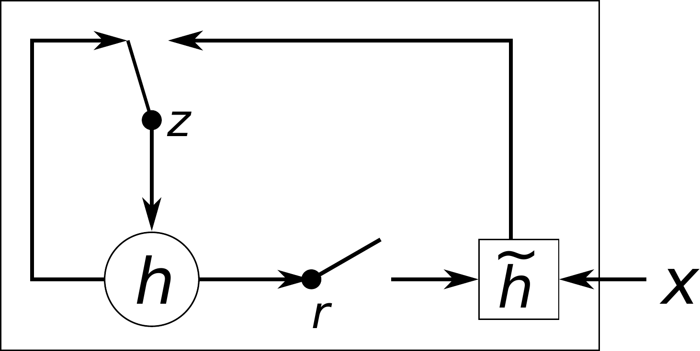
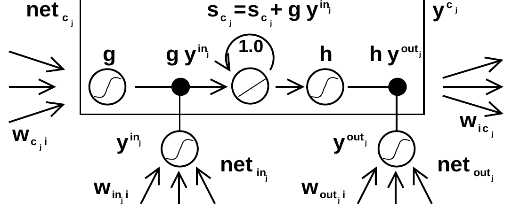

We all know what feedforward networks are. They assume a fixed-size input. It takes an input, multiplies it with some weights, and applies non-linearities. The order of the input doesn't matter. This is a problem for input sequences, like words in a sentence, stock prices over days, or audio samples, where order actually matters. Different sentences can have different lengths, which would require padding or truncating. A feedforward network collapses the learned weights, losing the temporal structure.
With recurrence, instead of processing all input at once, you process one input at a time and carry forward some memory.
$W_{xh}$: input-to-hidden weight matrix (projects inputs into the latent space)
$W_{hh}$: hidden-to-hidden weight matrix (carries memory forward in time)
$W_{hy}$: hidden-to-output weight matrix (transforms the hidden state to an output)
The current hidden state depends on the previous hidden state. That's what gives it memory.
Let's take it one step at a time. At each timestep $t$:
We take the input vector $x_t$ and apply the transformation $W_{xh} x_t$. This is what today's input contributes to the memory.
We take the previous hidden state $h_{t-1}$ and transform it using $W_{hh} h_{t-1}$. This is what we remember from yesterday.
We combine these, add a bias, and apply a $\tanh$ non-linearity. That's $h_t$, the memory at time $t$. It has today's input and past memory.
We then use another matrix $W_{hy}$ to turn the hidden state into the output: $y_t = W_{hy} h_t + b_y$. Based on my memory now, what should my prediction be?
Read the recurrence out loud before anything else: $h_t = \tanh(W_{xh} x_t + W_{hh} h_{t-1} + b_h)$. Today's memory is a squashed mix of today's input and yesterday's memory. $W_{xh} x_t$ is what today shouts: with $x_t = 7$ and $W_{xh} = 0.5$, that term is $3.5$. $W_{hh} h_{t-1}$ is what still echoes from yesterday: with $h_{t-1} = 0.998$ and $W_{hh} = 0.8$, that term is about $0.8$. Add them, add the bias, and $\tanh$ squeezes the sum into $(-1, 1)$. That squeeze is the whole tragedy of the vanilla RNN: it keeps the numbers sane, and it slowly erases the past. Here is the same equation as dataflow:
One vanilla RNN step as dataflow. The input and the old memory each get scaled, added together, and squashed by tanh. The output loops back to become next step's memory. Every step mixes and squashes, which is why old information fades.
Worked example: two steps, real numbers
Setup: the sensor spikes, $x_1 = 7$, starting from no memory ($h_0 = 0$). Small honest weights: $W_{xh} = 0.5$, $W_{hh} = 0.8$, $b_h = 0$.
$t = 1$: pre-activation:
$$0.5 \cdot 7 + 0.8 \cdot 0 = \mathbf{3.5}$$
$$h_1 = \tanh(3.5) \approx \mathbf{0.998}$$
The spike arrived, but tanh already crushed "7" down to "about 1". All that survives is "big positive".
One boring timestep later, the memory of the spike has faded from 0.998 to 0.690. Mix and squash, mix and squash. That washout is exactly what the gates were invented to stop.
The unrolled RNN. It looks like three networks in a row, but it is one cell reused across time, with the same weights at every step. The green arrows are the memory: each hidden state hands its memory to the next step. The takeaway: weight sharing is what makes the RNN handle sequences of any length.
How It Works: Backpropagation Through Time
Unlike backpropagation that flows layer by layer, in an RNN we have time as well as depth. This is called backpropagation through time (BPTT).
Say the loss is cross-entropy: $L = \sum_{t=1}^{T} L_t(y_t, \hat{y}_t)$
When we unroll the RNN for $T$ timesteps, it looks like a deep forward network of depth $T$, where each layer reuses the same weights ($W_{xh}, W_{hh}, W_{hy}$). During backprop, gradients flow through the sequence of hidden states. Since parameters are shared, their gradients accumulate across timesteps.
The trouble comes from the recurrent connection. Since $h_t$ depends on $h_{t-1}$, this expands into a long chain rule across time.
Vanishing gradients. The gradient from the loss has to travel back through every timestep, and each step multiplies it by a tanh derivative, which is at most 1. Multiply a number below 1 by itself $T$ times and it collapses: after a few dozen steps the signal arriving from step $T$ back at step 1 is a whisper. I think of it as shouting down a long hallway where every door eats half the sound. The model simply never learns dependencies longer than that hallway.
Exploding gradients. The same chain can run in reverse. If the recurrent weights in $W_{hh}$ are large, each timestep multiplies the gradient instead of shrinking it, and the updates blow up to garbage. Same mechanism, opposite disease. This one is at least loud about it: you see NaNs, not silence.
Why gradients vanish (or explode)
exploded (>1e2)safevanished (<1e-2)
How to play
The point: A gradient multiplied by slightly-less-than-1 at every step shrinks to nothing over a long sequence, and slightly-more-than-1 blows it up. That is vanishing vs exploding gradients.
What you'll see: A blue dot walks backward through time, one multiply per beat, while the curve dives or climbs in a dead-straight line on the log scale. Straight on a log axis means pure exponential. The readout tags each stop: vanished, exploded, or ok.
Timesteps T: Sets how far back the dot walks, 1 to 50. Try cranking it up at w = 0.90 and watch the dot land deeper in the vanished zone.
Weight scale w: Sets the multiplier per step, 0.50 to 1.50. Try pushing it past 1.00 and watch the curve flip from diving into the vanished band to climbing into the exploded band.
Play button: Runs or pauses the dot walk. Try dragging either slider mid-walk and watch the walk stop while the full curve redraws.
This is the simplified scalar picture. Real Jacobians are matrices, not one number, but the exponential dependence on $T$ is the whole story. Multiply by slightly-less-than-1 fifty times and there is nothing left for the first timestep to learn from; that is why the gates exist.
Gradient Clipping
You can deal with exploding gradients using gradient clipping. This shrinks the gradient vector before updating the parameters. Typically, you take the L2 norm of all parameters flattened into one big vector.
Let $g$ be the vector of all parameter gradients, flattened into one big vector.
The L2 norm is $\|g\|_2 = \sqrt{\sum_i g_i^2}$.
If this value is bigger than a threshold $\tau$, you rescale the entire gradient vector:
$$ \text{If } \|g\|_2 > \tau: \quad g \leftarrow g \cdot \frac{\tau}{\|g\|_2} $$
This keeps the direction of the gradient but reduces its magnitude. Walk it through with real numbers:
The norm comes out to $\|g\|_2 = \mathbf{12.4}$, way past the threshold $\tau = \mathbf{1.0}$. Scale factor $= \tau / \|g\|_2 = 1.0 / 12.4 \approx \mathbf{0.081}$.
Multiply every component by that: a parameter that wanted to jump $5.0$ now takes a step of $5.0 \cdot 0.081 = \mathbf{0.40}$. Same direction, sane size.
Now, the main issue with RNNs was really vanishing gradients, which affects long-term memory. The old memory gets mixed in and there's no control over how information passes to the future; the information washes out. The RNN forgets context.
Gated Recurrent Unit (GRU)
The GRU introduces gates to control what information to keep and what to forget.
An update gate decides: Do I keep the old memory or replace it with new information?
A reset gate decides: Do I ignore the old memory when making new memory, or should I use it?
For example, consider "Ramin wrote the best tutorial, he did it again!". A vanilla RNN might overwrite "Ramin" and forget who "he" was. A GRU's update gate would say "don't overwrite Ramin, hold on to that memory." If the update gate decides to just keep the old memory, the hidden state can flow unchanged for many steps. That means gradients can also flow back easily, solving the vanishing gradients problem.
Where $z_t$ is the update gate. If $z_t=0$, then $h_t = h_{t-1}$. The memory is copied directly from one step to the next. No multiplication, no tanh, just an identity connection. During backprop, the gradients flow through this same path, unchanged. This is a shortcut path or linear highway for memory.
GRU Equations
There are 2 gates, both are little feedforward networks with a sigmoid activation, so their outputs are between 0 and 1.
Update Gate ($z_t$): Keep the old hidden state or update it?
$$z_t = \sigma(W_z x_t + U_z h_{t-1} + b_z)$$
The sigmoid squashes the result to a number between 0 and 1, interpreted as a switch. 0 means keep old memory, 1 means overwrite with new memory.
Reset Gate ($r_t$): When computing new candidate memory, how much of the old memory should I ignore?
$$r_t = \sigma(W_r x_t + U_r h_{t-1} + b_r)$$
Candidate Hidden State ($\tilde{h}_t$): A proposal for new memory. The reset gate $r_t$ decides how much of the previous state $h_{t-1}$ is allowed in. If $r_t$ is zero, the candidate ignores past memory and depends only on the input.
$$\tilde{h}_t = \tanh(W_h x_t + U_h (r_t \odot h_{t-1}) + b_h)$$
Final Hidden State ($h_t$): The actual memory we carry forward. It's a blend between the old hidden state and the candidate, controlled by the update gate. If $z_t$ is 0, it keeps the old memory ($h_t = h_{t-1}$), and if $z_t$ is 1, it replaces it ($h_t = \tilde{h}_t$).
$$h_t = (1-z_t) \odot h_{t-1} + z_t \odot \tilde{h}_t$$
Finally, the output is computed from the hidden state:
$$y_t = W_{hy} h_t + b_y$$
Read the four equations as one story. The update gate $z_t$ asks: of the past, how much do I throw away? The reset gate $r_t$ asks: when I imagine new candidate memory, how much of the past do I let into the room? The candidate $\tilde{h}_t$ is the proposal. And the last line is the deal being closed: $h_t = (1-z_t) \cdot h_{t-1} + z_t \cdot \tilde{h}_t$. Old memory times $(1-z_t)$, plus the new proposal times $z_t$. It is a weighted average, a blend. $z_t = 0$ keeps everything, $z_t = 1$ replaces everything, and the network learns $z_t$ from data, per step, per neuron. Here is that last line as dataflow:
The GRU update as a blend. The old memory and the new candidate each get scaled, then added. The update gate $z_t$ is the blend knob. The reset gate $r_t$ works one level down, inside the candidate box: it decides how much of $h_{t-1}$ is allowed into the proposal.
Worked example: one GRU step, two settings of z
Setup: the spike just happened, so $h_{t-1} = 0.8$, and now a quiet input arrives: $x_t = 0.2$. Set $z = 0.1$ (keep almost everything) and $r = 0.9$. Weights are folded to 1 here so the gates do all the talking: $\tilde{h}_t = \tanh(r \cdot h_{t-1} + x_t)$.
Candidate:
$$\tilde{h}_t = \tanh(0.9 \cdot 0.8 + 0.2) = \tanh(0.92) \approx \mathbf{0.726}$$
The reset gate let 90% of the old state into the proposal.
Blend with $z = 0.1$:
$$h_t = 0.9 \cdot 0.8 + 0.1 \cdot 0.726 = 0.72 + 0.073 = \mathbf{0.793}$$
The state moved from 0.8 to 0.793. Almost nothing changed, and that is the point: with $z$ near 0 the GRU is a vault.
Now flip it: $z = 0.9$. Same candidate, totally different outcome:
$$h_t = 0.1 \cdot 0.8 + 0.9 \cdot 0.726 = 0.08 + 0.653 = \mathbf{0.733}$$
One number, $z$, chose between memory and reflex.
GRU in Code
The whole cell is just those four equations. Here it is, one step:
Even though the GRU doesn't have a dedicated cell state, it can still preserve long-term memory because the update gate can create identity connections across time steps.
Toy: the GRU blend, as plumbing
How to play
The point: The GRU's update gate is a blend knob between old memory and the new candidate. z near 0 is a vault that keeps the memory untouched, z near 1 is a reflex that overwrites it.
What you'll see: A spike of 7 rides through five timesteps while the blue old-memory stream and purple candidate stream blend at the z valve, then pour out of the green mixer as the new memory. The readout spells out the blend math at each step, and the takeaway line names the verdict: vault, reflex, or blend.
Prev step / Next step: Move one timestep back or forward. Try stepping manually through all five to read each blend before letting it play.
Play button: Steps forward from the current timestep, one beat each, pouring the streams live (at t = 5 it restarts from t = 1). At z = 0.30 the green output lands between blue and purple.
Timestep t slider: Jumps straight to any of the five steps; it starts at t = 2 so the old-memory pipe is already charged and r has something to gate. Try jumping to t = 1 to see the 7 arrive, then to t = 5 to see what survived.
Reset r: Sets how much old memory the candidate mixer pays attention to, 0 to 1. Try dragging it to 0: the orange r pipe pinches shut, the r x h label drops to 0, and the candidate falls back to tanh of the input alone. Try 1 and watch the memory stream pour back in.
Update z: Sets the blend ratio at the valve, 0 to 1. Try dragging it to 1.00 and watch the spike pour straight through; then to 0.05 and watch it get locked out.
Draggable z valve: The z handle on the canvas itself drags up and down and sets the same z as the slider. Try grabbing it and watch the pipe widths shift live.
Weights are folded to 1 here (candidate $= \tanh(r \cdot h_{t-1} + x_t)$), so the two gates are the only moving parts. A real GRU learns the $W$ and $U$ matrices too.
From the paper: Cho et al., EMNLP 2014
K. Cho, B. van Merrienboer, C. Gulcehre, D. Bahdanau, F. Bougares, H. Schwenk, and Y. Bengio, "Learning Phrase Representations using RNN Encoder-Decoder for Statistical Machine Translation," Proceedings of the 2014 Conference on Empirical Methods in Natural Language Processing (EMNLP), 2014. arXiv:1406.1078. This is the paper that introduced the GRU: the two gates you just played with, built to help a translation model remember long sentences. Below is its real Figure 2, the hidden-unit diagram, with its original caption.

Figure 2. An illustration of the proposed hidden activation function. The update gate $z$ selects whether the hidden state is to be updated with a new hidden state $\tilde{h}$. The reset gate $r$ decides whether the previous hidden state is ignored. See Eqs. (5)-(8) for the detailed equations of $r$, $z$, $h$ and $\tilde{h}$. Rebuilt from Figure 2 of Cho et al., "Learning Phrase Representations using RNN Encoder-Decoder for Statistical Machine Translation," EMNLP 2014. arXiv:1406.1078
Tap a numbered marker on the figure.
How to play
The point: This is the actual diagram from the 2014 paper that introduced the GRU, and it is almost insultingly simple: two switches and a blend. The whole gated-recurrent idea is right there in the authors' own drawing.
What you'll see: The five markers light up one by one, about two seconds apart, walking the signal path: the z switch, the r switch, the hidden state h, the candidate, then the input x. Each lit marker brings a one-line explanation of the part it sits on. Tapping any marker jumps straight to its explanation.
The markers: Try tapping 1 and 2 back to back: both gates are drawn as literal switches, which is the entire mental model. Then tap 4 and re-read the caption: the candidate is a proposal, and the z switch is the only thing that decides whether it becomes the memory.
One quirk worth knowing: the paper writes the blend as $h_j^t = z_j h_j^{t-1} + (1 - z_j) \tilde{h}_j^t$, with $z$ weighting the old state. The field later flipped the convention to the one this page uses ($z = 1$ replaces). Same idea, mirrored knob. If you read the original and $z$ feels backwards, that is why.
Long Short-Term Memory (LSTM)
LSTM (Long Short-Term Memory) separates memory into two parts and uses three gates to carefully control what flows into, out of, and stays within these memories.
The LSTM keeps two books instead of one. $c_t$ is the long ledger: it runs straight through the cell with no nonlinearity squashing it, so information (and, during backprop, gradients) can ride it across hundreds of steps almost untouched. That unbroken line is the entire trick; everything else on this page is plumbing around it. $h_t$ is the note I hand you right now: the short-term read, what the network is thinking at this step, built from the ledger but filtered for immediate use.
Three gates guard the ledger, and each one is a question the network asks every step:
Forget gate: Do I still need this? It looks at the old ledger and erases the entries that stopped mattering. Ruthless, but somebody has to take out the trash.
Input gate: Is this worth writing down? It decides how much of the new candidate actually gets added to the ledger. Not every thought deserves ink.
Output gate: What do I show right now? It filters the ledger down into $h_t$, the short-term read the rest of the network gets to see.
The LSTM cell-state highway. The green line is the long-term memory running straight through the cell. The forget gate erases pieces of it, the input gate writes new pieces, and the output gate picks what to show right now as the short-term memory. The signal itself is never squashed by a nonlinearity, so gradients flow back along the highway untouched. That is how the LSTM fixes vanishing gradients.
LSTM Equations
Cell State Update (Long-Term Memory):
The new long-term memory is formed by keeping some of the old memory and adding some new information.
The short-term working memory is a filtered view of the long-term memory.
$$h_t = o_t \odot \tanh(c_t)$$
Where $o_t$ is the output gate.
The Gates:
All gates are a mix of the input ($x_t$) and the previous hidden state ($h_{t-1}$), passed through a sigmoid function.
Forget Gate ($f_t$): Should I forget this old info?
$$f_t = \sigma(W_f x_t + U_f h_{t-1} + b_f)$$
Input Gate ($i_t$): Should I add this new info?
$$i_t = \sigma(W_i x_t + U_i h_{t-1} + b_i)$$
Output Gate ($o_t$): What part of memory should I expose right now?
$$o_t = \sigma(W_o x_t + U_o h_{t-1} + b_o)$$
Read the cell update like a bank ledger: $c_t = f_t \cdot c_{t-1} + i_t \cdot \tilde{c}_t$. The forget gate $f_t$ decides what fraction of yesterday's balance survives: with $c_{t-1} = 2.0$ and $f_t = 0.9$, that term is $1.8$. The input gate $i_t$ decides how much of today's deposit gets added: with candidate $\tilde{c}_t = 0.1$ and $i_t = 0.3$, that term is $0.03$. Notice what is missing: there is no $\tanh$ on this line. The cell state is only ever scaled and added, never squashed, which is why gradients walk straight back down the highway instead of vanishing. Then $h_t = o_t \cdot \tanh(c_t)$: the output gate decides how much of the (squashed) balance to show the world right now. With $o_t = 0.8$, the network shows 80%. Here is the ledger as dataflow:
The LSTM cell update as two streams merging. The forget gate scales the old balance, the input gate scales the deposit, and they add. No squashing on this line, which is why the cell state is a gradient highway. The output gate then picks how much of $\tanh(c_t)$ to show as $h_t$.
Worked example: one LSTM step, then the amnesia version
Setup: the cell holds $c_{t-1} = 2.0$, the compressed memory of the spike. A quiet input arrives with candidate $\tilde{c}_t = 0.1$ (take it as given). Set $f = 0.9$ (keep most), $i = 0.3$ (write a little), $o = 0.8$.
Cell:
$$c_t = 0.9 \cdot 2.0 + 0.3 \cdot 0.1 = 1.8 + 0.03 = \mathbf{1.83}$$
Ninety percent of the balance survived; the quiet input added almost nothing.
Hidden:
$$h_t = 0.8 \cdot \tanh(1.83) = 0.8 \cdot 0.950 = \mathbf{0.760}$$
The network shows 80% of what it remembers.
Now the amnesia version: $f = 0.1$.
$$c_t = 0.1 \cdot 2.0 + 0.03 = \mathbf{0.23}$$
$$h_t = 0.8 \cdot \tanh(0.23) = 0.8 \cdot 0.226 = \mathbf{0.181}$$
Same input, same candidate, one gate moved, memory erased. That is the whole power of the LSTM in one number.
Toy: the memory tank
How to play
The point: The LSTM stores memory in a tank that only leaks through the forget gate, so the 7 survives exactly as long as the forget gate stays open.
What you'll see: The 7 pours into the tank and rides five timesteps while gray drops drain out, blue rain pours in, and the green shutter reveals the hidden state below. The strip of mini tanks at the bottom tells the whole story at once, and the takeaway line delivers the verdict: Vault, Fading, or Gone.
Prev step / Next step: Move one timestep back or forward. Try stepping manually to watch drain, pour, and reveal happen in order.
Play button: Walks all five steps, animating drain, pour, and reveal at each one. At forget 1.00 the 7 sits untouched through all five steps.
Timestep t slider: Jumps straight to any of the five steps. Try jumping to the last step to see what survived your gate settings.
Forget f: Sets how much memory drains out each step, 0 to 1. Try dragging it to 0.10 and watch the 7 drain away, then to 1.00 and watch it survive.
Input i: Sets how much of each new input pours into the tank, 0 to 1. Try dragging it near 0 and watch the new inputs bounce off.
Output o: Sets how much of the tank shows through as the hidden state, 0 to 1. Try dragging it near 0 and watch the readout go quiet even though the tank is full.
Vanilla RNN compare: Adds a vanilla RNN track on the same sequence. Try checking it and watch the 7 wash out with no gates to protect it.
Simplification, stated up front: the candidate $\tilde{c}_t$ is pinned to the raw input $x_t$, so every number you see is the gates' doing alone. A real LSTM learns $\tilde{c}_t = \tanh(W_c x_t + U_c h_{t-1} + b_c)$.
Toy: gate safari, you set the routing policy
important 7.0loud distractor 9.9quiet steps
How to play
The point: Gating is a routing policy you choose. Open the valve on the important 7, close it on the loud 9.9 distractor, and the tank remembers exactly what you let in.
What you'll see: Six colored pipes pour into the tank one step at a time, each pipe's width set by your own valve sliders. The bar under the tank grows one segment per step, sized by what each gate let through, and the verdict line names what the network remembers: the 7.0, the distractor, or nothing.
Play the sequence: Pours all six steps in turn, one beat each. With all gates open the loudest input, not the most important one, wins the tank.
Remember everything: Opens all six valves. Try it and watch the verdict read "remembers the distractor 9.9".
Block the distractor: Opens every valve except the 9.9's. Try it and watch the verdict flip to the important 7.0.
Amnesia: Closes all six valves. Try it and watch the verdict: the network remembers nothing.
Six valve sliders: Set how much of each timestep's input gets written into the tank. Try closing only the fourth valve and watch the distractor vanish from the tank.
The forget gate is pinned at 1 (nothing leaks out), so the write gate does all the routing alone. That gate is the LSTM's input gate. A real network learns both schedules from data.
From the paper: Hochreiter and Schmidhuber, 1997
S. Hochreiter and J. Schmidhuber, "Long Short-Term Memory," Neural Computation 9(8):1735-1780, 1997. Author PDF. The paper that started all of this: a memory cell with a self-loop of weight exactly 1.0, so the error can cycle forever without shrinking, plus gates that open and close access to it. Below is its real Figure 1, the memory-cell architecture, with its original caption.

Figure 1. Architecture of memory cell $c_j$ (the box) and its gate units $in_j$, $out_j$. The self-recurrent connection (with weight 1.0) indicates feedback with a delay of 1 time step. It builds the basis of the "constant error carrousel" CEC. The gate units open and close access to CEC. See text and appendix A.1 for details. Rebuilt from Figure 1 of Hochreiter and Schmidhuber, "Long Short-Term Memory," Neural Computation 9(8), 1997.
Tap a numbered marker on the figure.
How to play
The point: This is the actual diagram from the 1997 paper. The green highway you saw in the LSTM figure above is right here in the authors' drawing: the little loop labeled 1.0. Everything else in the figure is gate plumbing around that one arrow.
What you'll see: The five markers light up one by one, about two seconds apart, starting at the 1.0 self-loop, dropping to the two gate units below the box, then rising to the input squashing g and the output squashing h. Each lit marker brings a one-line explanation of the part it sits on. Tapping any marker jumps straight to its explanation.
The markers: Try tapping 1 first and sitting with it: a weight of exactly 1.0 is the whole paper. Then tap 2 and 3 and watch where they sit: the gate units live outside the box, deciding who gets in and out of the carousel.
Spot what is missing: there is no forget gate in this figure. The 1997 LSTM had only input and output gates; the forget gate arrived three years later, from Gers, Schmidhuber and Cummins ("Learning to Forget," 2000). The LSTM on this page is the post-2000 version.
Long sequences expose the vanilla RNN
Toy: same spike, three memories
How to play
The point: One spike feeds a plain RNN, a GRU, and an LSTM. The RNN's echo decays to flat, the gated lanes hold it, and holding costs 3x to 4x the compute.
What you'll see: The spike lights up in the input strip, then each lane draws its own echo step by step, one beat each. The blue RNN trace dives toward zero while the GRU and LSTM traces hold steady, and the final readout tags each lane: forgot or held, next to its compute bill.
Play button: Steps all three lanes through the seven timesteps. The RNN trace flattens by the last step while the gated traces stay up. The numbers: RNN 0.76 down to 0.01, GRU holds 0.96, LSTM holds 0.64.
Reset button: try it and watch the lanes clear back to the start.
Illustrative fixed weights, scalar state, h_0 = c_0 = 0. The GRU hold is input-dependent: feed a different spike and it holds a different value. Costs are relative and schematic (gate-count framing), not measured.
In practice you never write these cells by hand. PyTorch has them built in, and the call is boring in the best way:
# A 2-layer LSTM; batch_first matches the (batch, seq, features) convention
lstm = nn.LSTM(input_size=28, hidden_size=128, num_layers=2, batch_first=True)
output, (hn, cn) = lstm(x) # output: every step of the last layer; hn, cn: final states per layer
# GRU is the same minus the cell state: output, hn = gru(x)
So what does gating actually buy you? The classic stress test is sequential MNIST: feed a 28x28 digit in one row at a time, so the model must remember early rows for 28 steps before it gets to classify. Here is how the three architectures compare:
Works, but the long gap between early rows and the label hurts it
GRU
~98%
The update gate holds early rows in memory across all 28 steps
LSTM
~98%
Same story; the cell-state highway carries the rows straight through
Honestly labeled: these are reference values typical of published sequential-MNIST runs with this setup, not measured on this machine. The ordering is the point and it is robust: once the sequence gets long, the vanilla RNN falls behind and the gated models do not.
GRUs typically achieve similar results to LSTMs with fewer parameters: no separate cell state, two gates instead of three. If you are not sure which to pick, start with a GRU.
What goes wrong when you actually train one
Vanishing gradients are real. A vanilla RNN on long sequences is a bad default. If your sequence is longer than a few dozen steps, reach for a GRU or LSTM first.
Exploding gradients need clipping. Even gated models can blow up. Gradient clipping (above) is cheap insurance; a threshold around 1.0 is a common starting point.
Long sequences cost memory. BPTT stores activations for every timestep. For very long sequences, use truncated BPTT: cut the sequence into chunks, carry the hidden state forward between chunks, and only backprop within each chunk.
Don't put dropout inside the recurrence. Apply dropout between stacked layers, not across timesteps within a cell. PyTorch's built-in modules do this correctly with one fixed mask per layer per forward pass.
When do RNNs still make sense? Transformers won the long-sequence game because attention sees everything at once. But RNNs are still the right call for streaming data where you must decide now with constant memory: real-time sensor streams, on-device keyword spotting, low-latency control. If the input arrives one step at a time and you cannot wait for the full sequence, recurrence is the natural fit.
The price of reading one step at a time
Gating fixed the memory problem, but RNNs still read one step at a time, which makes training slow on long sequences. The next idea drops recurrence entirely: let every position look directly at every other position. That's Transformers.